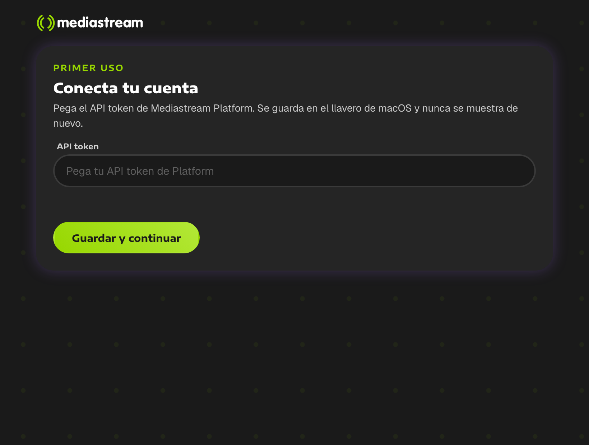
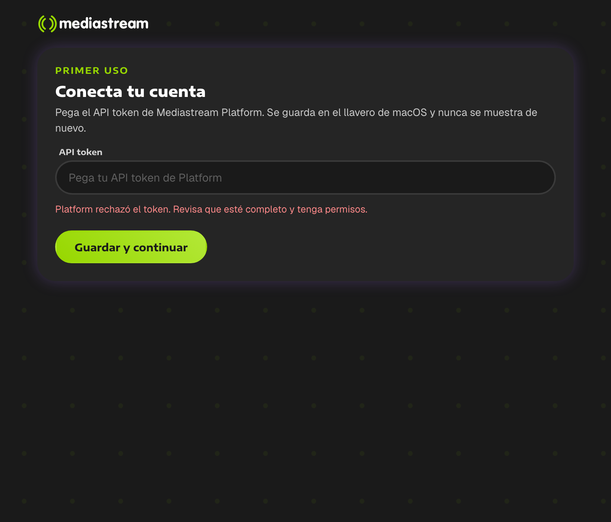
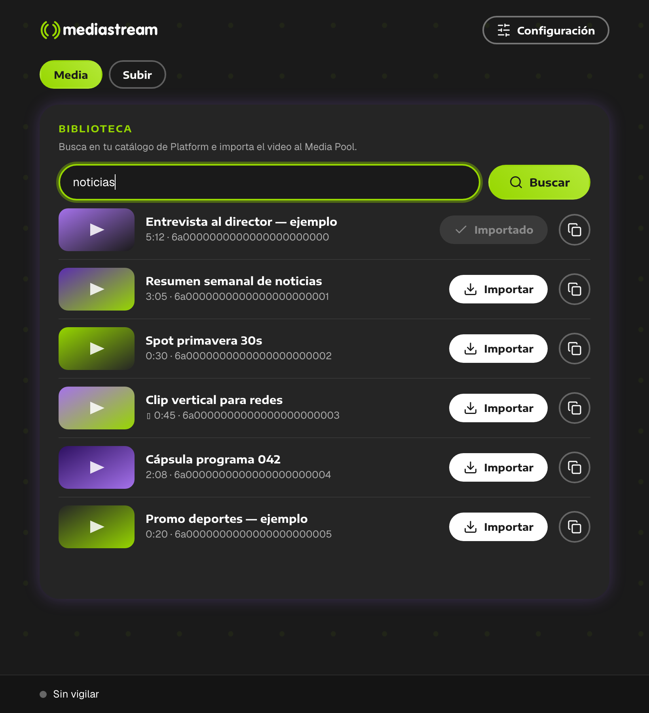
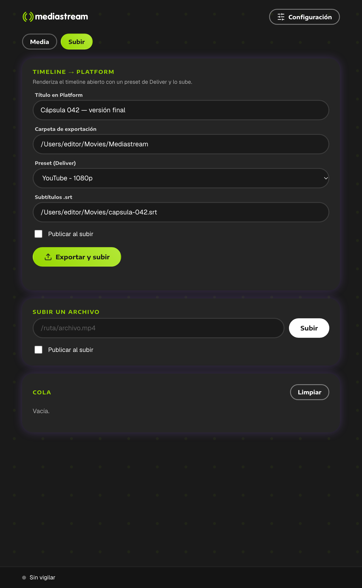
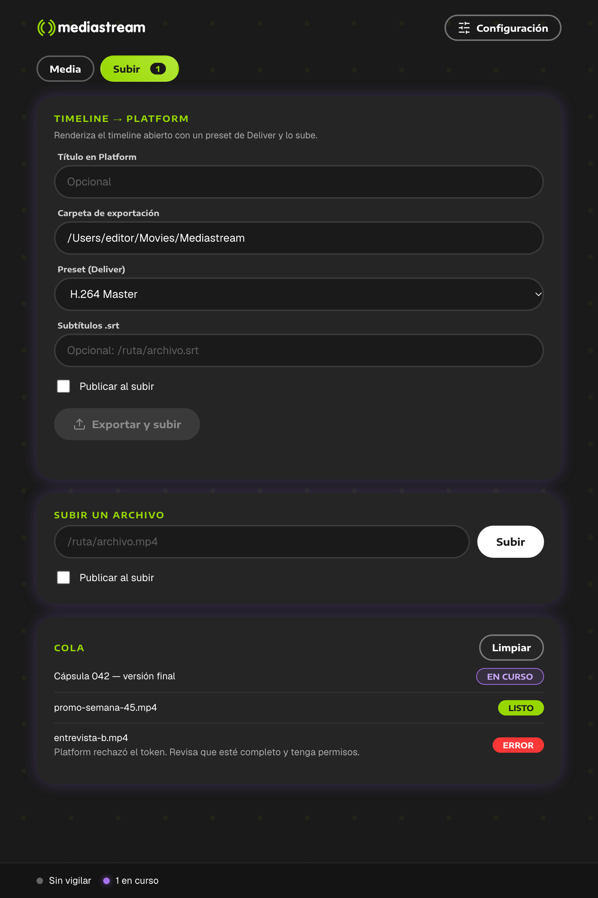
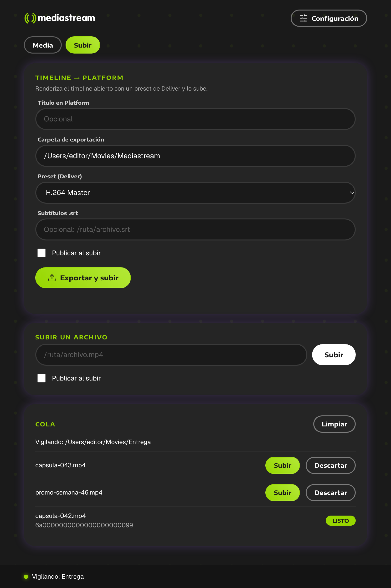
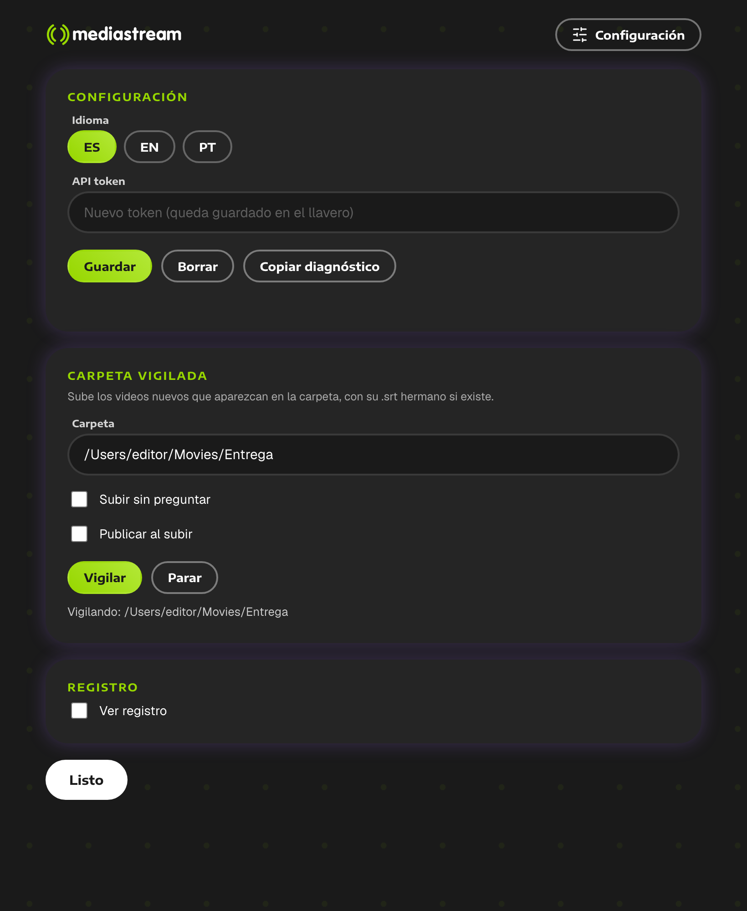

Busca en tu catálogo de Platform, importa a tu proyecto y sube tus renders, sin salir del flujo de edición.
Empieza aquí
El plugin de Mediastream conecta DaVinci Resolve con tu cuenta de Mediastream Platform. Todo el trabajo ocurre en una ventana dentro de Resolve: no necesitas salir del programa ni abrir la web de Platform para el día a día.
| Quiero… | Dónde lo hago |
|---|---|
| Traer un video de Platform a mi proyecto | Pestaña Media → buscar → Importar (página 6) |
| Subir mi timeline terminado | Pestaña Subir → Exportar y subir (página 7) |
| Subir un archivo que ya tengo | Pestaña Subir → Subir un archivo (página 8) |
| Que todo lo que exporte a una carpeta se suba solo | Configuración → Carpeta vigilada (página 9) |
| Subir con subtítulos | Campo Subtítulos .srt o un .srt junto al video (página 10) |
Plugin de DaVinci Resolve Studio
Menú Workspace → Workflow Integrations → Mediastream Platform. Se abre como una ventana de Resolve; puedes dejarla abierta mientras editas.
Antes de instalar
| Qué necesitas | Detalle |
|---|---|
| Mac con Apple Silicon | El instalador incluido es para chips M1 o superiores. Para un Mac Intel hay que generar otro instalador (pídelo a IT). |
| DaVinci Resolve Studio 21 | Los plugins (Workflow Integrations) existen solo en la edición Studio. Resolve Free no es compatible. |
| API token de Platform | Lo gestiona tu administrador en Mediastream Platform (sección de cuenta / API). Pide uno con permiso de lectura y, si vas a subir, de subida y publicación. |
| Internet | Acceso a platform.mediastre.am y mdstrm.com. En redes corporativas puede requerir una excepción. |
| Espacio en disco | Descargas y renders van a ~/Movies/Mediastream (puedes cambiarlo). Antes de exportar el panel pide al menos 2 GB libres. |
Paso a paso
Mediastream-Resolve-1.1.3.pkg con clic derecho → Abrir. El instalador aún no está firmado por Apple: macOS pide confirmación una sola vez. Si solo ves «No se puede abrir», ve a Ajustes del Sistema → Privacidad y seguridad y pulsa Abrir de todos modos.| Qué | Dónde |
|---|---|
| Plugin de Resolve Studio | /Library/Application Support/Blackmagic Design/DaVinci Resolve/Workflow Integration Plugins/com.mediastream.platform |
El instalador copia el módulo WorkflowIntegration.node desde tu propia instalación de Resolve (Blackmagic no permite redistribuirlo). Si Resolve no está instalado todavía, instala Resolve y vuelve a correr el instalador.
Primer uso
El token se guarda en el llavero de macOS. Solo lo pegas una vez por Mac.
Verás «Platform rechazó el token. Revisa que esté completo y tenga permisos.» Pega el token completo (sin espacios al final) o pide a tu administrador uno con los permisos que necesitas.

Primera vez: pega tu API token.

Si el token no sirve, el panel te lo dice.
Pestaña Media
~/Movies/Mediastream y lo importa al Media Pool. El botón pasa a Importado.Título__id.mp4, en ~/Movies/Mediastream.
Resultados de búsqueda. El primero ya está importado.
Pestaña Subir
Renderiza el timeline con tu preset, verifica que el archivo no esté vacío, lo sube por partes (reintenta solo si falla la red), aplica título y publicación y, si pusiste un .srt, lo adjunta.

Pestaña Subir con los campos completos.
Pestaña Subir
Formatos: mp4, mov, mxf, m4v, webm, mkv, avi. Por seguridad no se suben archivos ocultos ni de carpetas ocultas.
| Estado | Significa |
|---|---|
| En curso | Renderizando o subiendo. El número en la pestaña Subir cuenta los trabajos activos. |
| Listo | Ya está en Platform. |
| Error | Falló; debajo se explica por qué. Corrige y vuelve a lanzar. |
Solo corre una exportación a la vez. Limpiar quita de la lista los trabajos terminados.

Cola con un trabajo en curso, uno listo y uno con error.
Configuración
Elige una carpeta de entrega. Todo video nuevo que aparezca en ella se prepara para subir a Platform. Es cómoda para entregar: exportas desde Deliver a esa carpeta y decides qué subir.
| Opción | Qué hace |
|---|---|
| Subir sin preguntar | Apagada por defecto. Encendida, sube cada archivo nuevo sin pedir confirmación. |
| Publicar al subir | Deja publicado lo que sube. |
El panel espera a que el archivo deje de crecer antes de ofrecerlo, así no sube exportaciones a medias. Si junto al video hay un .srt con el mismo nombre (clip.mp4.srt o clip.srt), se adjunta solo.

Archivos nuevos esperando tu decisión.
Ajustes
Hay dos formas de subir un video con subtítulos:
.srt al lado del video con el mismo nombre.El panel quita la marca BOM de UTF-8 (que Platform rechaza) y sube el subtítulo como español (es) cuando el video ya está en Platform.
En Configuración → Idioma elige ES, EN o PT. Se recuerda para la próxima vez.
En Configuración puedes pegar un token nuevo y pulsar Guardar, o Borrar (pide una segunda pulsación para confirmar: ¿Borrar?).

Configuración: idioma, token y carpeta vigilada.
| Atajo | Acción |
|---|---|
| ⌘ F | Ir a la búsqueda |
| ⌘ 1 · ⌘ 2 | Pestañas Media · Subir |
| ⌘ , | Abrir Configuración |
| Esc | Cerrar Configuración |
Cuando algo no sale
| Qué ves | Qué hacer |
|---|---|
| «Platform rechazó el token…» | El token está incompleto o no tiene permisos. Pega el token entero o pide uno nuevo a tu administrador. |
| «Resolve is not reachable or has no open project…» | Abre Resolve y un proyecto. Activa Preferences → System → General → External scripting using → Local. |
| «No se pudo crear el trabajo de render. ¿Hay un timeline abierto y el preset es válido?» | Abre el timeline que quieres subir y elige otro preset de la lista. |
| «El render no pasó la verificación; no se subió.» | Resolve dejó un archivo vacío o dañado. Renderiza de nuevo; si se repite, prueba otro preset. |
| «Ya hay una exportación en curso.» | Espera a que termine la actual: solo se permite una a la vez. |
| «not enough disk space…» | Libera espacio o cambia la Carpeta de exportación. |
| Subí un video y no lo encuentro en Media | Está sin publicar. Publícalo en Platform o súbelo con Publicar al subir. |
| Importar descarga pero no aparece en el Media Pool | Comprueba que haya un proyecto abierto. El archivo queda en ~/Movies/Mediastream: impórtalo con File → Import Media. |
| macOS dice que el instalador «no se puede abrir» | Clic derecho → Abrir, o Ajustes del Sistema → Privacidad y seguridad → Abrir de todos modos. |
| El plugin no aparece en Workflow Integrations | Solo existe en Studio. Reinicia Resolve. Si sigue sin aparecer, vuelve a correr el instalador con Resolve ya instalado. |
Pedir ayuda
En Configuración pulsa Copiar diagnóstico y pega el texto en tu mensaje a soporte. Incluye versión, sistema y las últimas líneas del registro. No incluye tu token.
También puedes activar Ver registro (Configuración) para leer cada acción y su resultado en pantalla.
Mantenimiento
Corre el instalador nuevo encima de la versión anterior. Si tu equipo de IT configuró un aviso de actualizaciones, el plugin te mostrará un aviso con la dirección de descarga; nunca se instala nada solo.
| Versión | 1.1.3 (instalador sin firmar, arm64; el motor del plugin va dentro de su carpeta) |
| Token | Llavero de macOS, servicio mediastream-resolve |
| Ajustes y log | ~/.config/mediastream-resolve/ (prefs.json, panel.log) |
| Red | HTTPS a platform.mediastre.am y *.mdstrm.com |
| Servicio local | Solo 127.0.0.1, puerto libre, con clave por sesión. Lo muestra la ventana del plugin dentro de Resolve; no se abre navegador. |
| Avisos de versión | Apagados salvo que se defina MEDIASTREAM_UPDATE_URL; MEDIASTREAM_NO_UPDATE_CHECK=1 los desactiva |